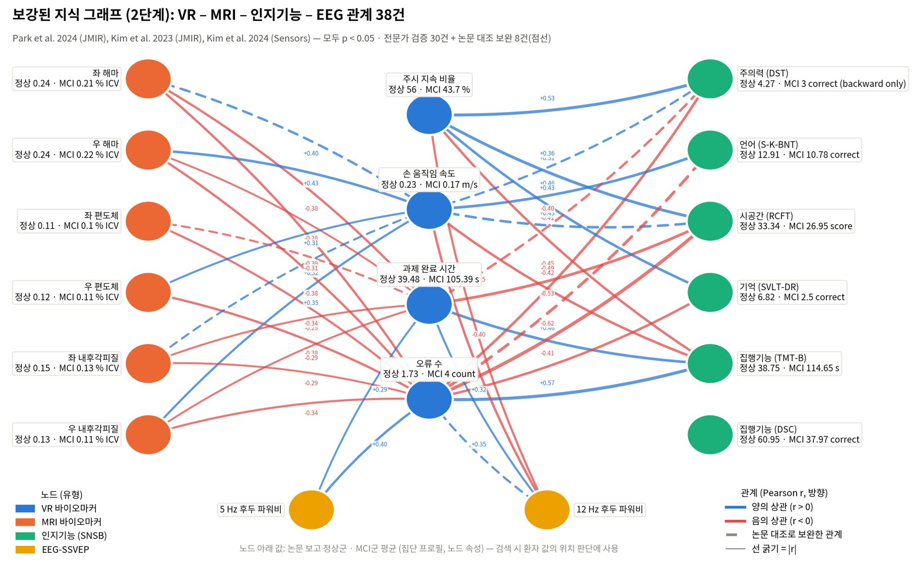

01Problem문제
LLMs can read numbers, but they have no grounded knowledge of how VR behavioral biomarkers relate to brain structure and cognition. VR biomarkers are new, so there is little literature to retrieve, and an unconstrained LLM tends to produce plausible but unsupported explanations — a non-starter for clinicians.
LLM은 수치를 읽을 수는 있지만, VR 행동 바이오마커가 뇌 구조·인지기능과 어떻게 연결되는지에 대한 근거 지식은 없습니다. VR 바이오마커는 새로운 지표라 검색할 문헌도 적어, LLM이 그럴듯하지만 근거 없는 설명을 만들기 쉽습니다. 임상에서는 받아들일 수 없는 문제입니다.
02Approach접근 방법
- Curate the evidence근거 선별Screened 100 candidate papers and kept 15 with directly usable statistics.후보 논문 100편을 검토해 바로 쓸 수 있는 통계가 있는 15편을 선별했습니다.
- Extract and verify relations관계 추출·검증An LLM extracted biomarker relations; every r and p value was then checked by hand against the source paper.LLM으로 바이오마커 간 관계를 추출한 뒤, 모든 r·p 값을 원 논문과 직접 대조해 검증했습니다.
- Build the knowledge graph지식 그래프 구축Neo4j AuraDB graph with 16 entities (VR 4 · MRI 6 · cognition 6), 32 relations, and healthy/MCI group profiles stored as node attributes.Neo4j AuraDB에 엔티티 16개(VR 4 · MRI 6 · 인지 6), 관계 32개를 구축하고, 정상군·MCI군 프로필을 노드 속성으로 저장했습니다.
- Retrieve patient-specific evidence환자별 근거 검색Biomarkers that deviate from healthy controls (|z| ≥ 1.5) become seed nodes; their subgraph is retrieved and ranked.정상군 대비 크게 벗어난 지표(|z| ≥ 1.5)를 시작 노드로 삼아 관련 하위 그래프를 검색·정렬합니다.
- Reason step by step단계별 추론GPT-4o reasons in four steps — neuropsych tests → +VR → +MRI → final call — citing relation IDs, r, p and the source paper.GPT-4o가 신경심리검사 → +VR → +MRI → 종합 판정의 4단계로 추론하며 관계 ID, r, p, 출처 논문을 인용합니다.
- Verify the output출력 검증Programmatic checks (cited values match the record, cited relations exist) plus a 6-dimension LLM-as-a-judge rubric.인용 수치가 환자 기록과 일치하는지, 인용 관계가 실제 근거인지 프로그램으로 검증하고, 6개 차원 LLM-as-a-judge로 평가합니다.

Verified knowledge graph (16 entities · 32 relations)검증된 지식 그래프 (엔티티 16개 · 관계 32개)
Every edge below comes from our own published studies and was checked against the source paper. Click a biomarker to see its healthy vs. MCI profile and the relations the LLM can cite.
아래의 모든 관계는 연구실의 출판 논문에서 왔고, 원 논문과 대조해 검증했습니다. 바이오마커를 클릭하면 정상군·MCI군 프로필과 LLM이 인용할 수 있는 관계가 나와요.

03Results결과
- Adding the KG raised specificity by 11.1 percentage points in both input settings, so fewer healthy people were flagged as MCI.KG를 추가하면 두 입력 구성 모두에서 특이도가 11.1%p 올라, 정상인을 MCI로 잘못 판정하는 경우가 줄었습니다.
- Accuracy: 88.7% → 90.6% (SNSB + VR) and 83.0% → 86.8% (+ MRI).정확도: 88.7% → 90.6% (SNSB + VR), 83.0% → 86.8% (+ MRI).
- Report quality judged by an LLM rose from 3.24 / 3.42 to 4.64 / 4.76 out of 5; cited values matched the record 100% of the time with no hallucinated relations.LLM 평가 리포트 점수는 5점 만점에 3.24 / 3.42에서 4.64 / 4.76으로 올랐고, 인용 수치 일치율 100%, 환각 관계 0건이었습니다.
04My role나의 역할
- Won the competitive grant as a PhD student and owned it end to end: planning, implementation, reporting.박사과정생으로 경쟁형 과제를 수주하고 기획·구현·결과 보고까지 전 과정을 책임졌습니다.
- Designed the KG schema, verification protocol, retrieval strategy, prompts, and evaluation.KG 스키마, 검증 절차, 검색 전략, 프롬프트, 평가 설계를 직접 했습니다.
- Wrote the Python pipeline (data loading → KG → RAG → reasoning → verification → report).데이터 로딩부터 KG, RAG, 추론, 검증, 리포트까지 Python 파이프라인을 직접 구현했습니다.
05Outputs성과물
- Patent특허VR digital biomarker-based clinical decision support system (KR10-2025-0022344, filed)VR 디지털 바이오마커 기반 임상 의사결정 지원 시스템 (KR10-2025-0022344, 출원)
- Paper논문Label-grounded clinical guideline generation for LLM-based MCI screening (IEIE 2026)LLM 기반 MCI 선별을 위한 정답 기반 임상 가이드라인 생성 (대한전자공학회 2026) →